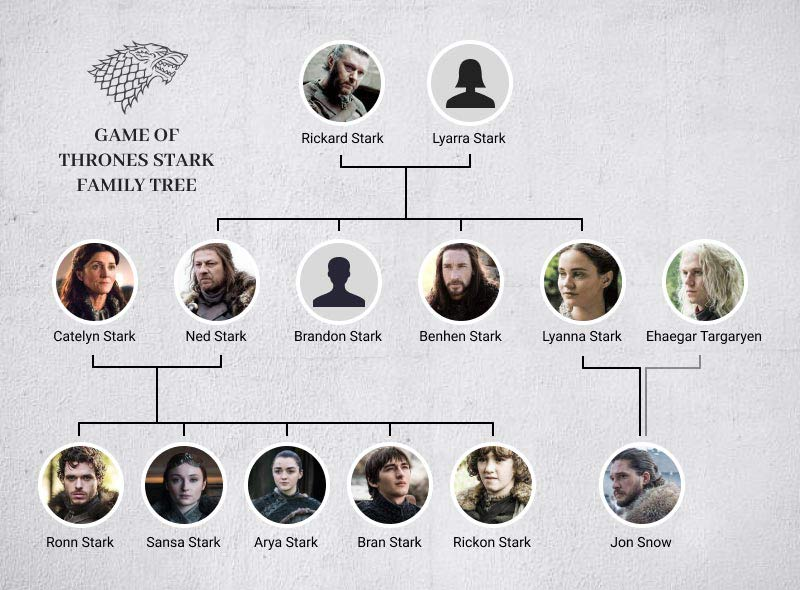

Winterfell
Winterfell est le siège de la maison Stark. C'est un grand château situé au centre du Nord, d'où le chef de la famille Stark règne sur son peuple. Winterfell désigne aussi le bourg attenant à ses remparts, appelé aussi la ville d'hiver.
Le château est situé à côté de la Route Royale qui les mène depuis le mur jusqu'à Port-Réal, plus d'un millier de miles au sud. Il est situé au sommet de sources chaudes qui gardent le château au chaud même dans les pires hivers. Des sinueuses cryptes situées sous le château contiennent les dépouilles des rois et des seigneurs Stark et garde l'histoire de l'ancienne famille. Le château existe depuis des millénaires. Il a été bâti par Brandon le Bâtisseur.
Le château est mis à la torche par Ramsay Snow après que Theon Greyjoy a été trahi par ses propres hommes. Après la chute de Moat Cailin, l'armée Bolton s'installe à Winterfell où Ramsay Bolton vit et se déclare seigneur de Winterfell et gouverneur du Nord.
Winterfell est reprise aux Bolton par la coalition Arryn-Stark menée par Jon Snow et Sansa Stark suite à la Bataille des Bâtards. Cette bataille voit le rétablissement de la domination de la maison Stark sur le Nord. Suite à la nomination de Bran Stark comme Roi des Andals et des Premiers Hommes par les seigneurs et dames de Westeros, Winterfell devient le château de la reine du Nord, Sansa Stark qui règne sur le royaume indépendant du Nord.

| Nom | Photo | Maison et Blason | Titres |
|---|---|---|---|
| Eddard "Ned" Stark | Seigneur de Winterfell et gouverneur du Nord | ||
| Robb Stark | Seigneur de Winterfell, gouverneur du Nord et Roi du Nord | ||
| Brandon "Bran" Stark | Seigneur de Winterfell et prince | ||
| Theon Greyjoy | Prince des Îles de Fer et prince de Winterfell | ||
| Roose Bolton | |||
| Ramsay "Snow" Bolton | |||
| Jon Snow | |||
| Sansa Stark |